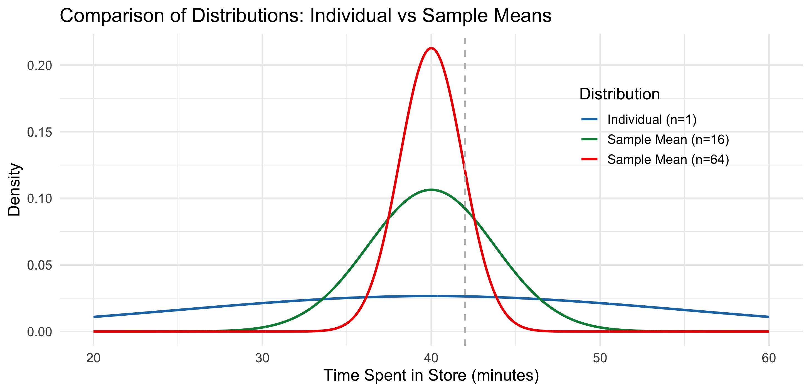

Now we have a \(2\times 1\) random vector \(X = (X_1, X_2)'\), we have \[ \mathbb{E}(X) = \mathbb{E}\begin{pmatrix} X_1 \\ X_2 \end{pmatrix} = \begin{pmatrix} \mathbb{E}(X_1) \\ \mathbb{E}(X_2) \end{pmatrix} \]
The variance of the bivariate random vector is given by: \[ \begin{aligned} \text{Var}(X) &= \mathbb{E}\{(X-\mathbb{E}(X))(X-\mathbb{E}(X))'\} \\ &= \mathbb{E}\left\lbrace \begin{bmatrix} X_1-\mathbb{E}(X_1) \\ X_2-\mathbb{E}(X_2) \end{bmatrix} \begin{bmatrix} X_1-\mathbb{E}(X_1), X_2-\mathbb{E}(X_2) \end{bmatrix} \right\rbrace \\ &= \mathbb{E}\begin{pmatrix} [X_1-\mathbb{E}(X_1)]^2 & [X_1-\mathbb{E}(X_1)][X_2-\mathbb{E}(X_2)] \\ [X_2-\mathbb{E}(X_2)][X_1-\mathbb{E}(X_1)] & [X_2-\mathbb{E}(X_2)]^2 \end{pmatrix} \\ &= \begin{pmatrix} \mathbb{E}\{[X_1-\mathbb{E}(X_1)]^2\} & \mathbb{E}\{[X_1-\mathbb{E}(X_1)][X_2-\mathbb{E}(X_2)]\} \\ \mathbb{E}\{[X_2-\mathbb{E}(X_2)][X_1-\mathbb{E}(X_1)]\} & \mathbb{E}\{[X_2-\mathbb{E}(X_2)]^2\} \end{pmatrix} \\ &= \begin{pmatrix} \text{Var}(X_1) & \text{Cov}(X_1, X_2) \\ \text{Cov}(X_1, X_2) & \text{Var}(X_2) \end{pmatrix} \end{aligned} \] This is called the variance (or also the covariance) matrix. This matrix is, by definition, symmetric.
Linear Transformations of a Random Vector
Let \(X\) be a \(p\times 1\) random vector, let \(A\) be a non-random \(q\times 1\) vector, and let \(B\) be a non-random \(p\times q\) matrix.
Then \[ Y = A + BX \] is a \(q\times 1\) random vector.
The expected value of this transformation is given by \[ \mathbb{E}(Y) = \mathbb{E}(A+BX) = A + B\mathbb{E}(X) \]
The variance of this transformation is given by \[ \text{Var}(Y) = \text{Var}(A+BY) = \text{Var}(BY) = B\text{Var}(X)B' \]
Non-Negative Definiteness
Remember that for a scalar random variable \(X\), \(\text{Var}(X)\) is a non-negative scalar.
For a \(q\times 1\) random vector \(Y\) (such as \(Y=A+BX\) defined before), the variance \(\text{Var}(Y)\) will be a \(q \times q\) matrix. What is the counterpart of non-negativeness for matrices?
The appropriate concept is called non-negative definiteness or positive semi-definiteness.
Formal definition: A \(q \times q\) square matrix \(\Sigma\) is called non-negative definite (or positive semi-definite) if for any non-zero \(q\times 1\) vector \(a\) it holds that \[ a'\Sigma a \ge 0. \] If the square matrix \(\Sigma\) is non-negative definite, we write \(\Sigma \ge 0.\)
Suppose that \(X_1, \ldots, X_n\) is an independent and identically distributed (iid) sequence with a finite mean \(\mathbb{E}(X_i)=\mu\) and variance \(\text{Var}(X_i)=\sigma^2\).
Define a sample mean: \(\overline{X}=\frac{1}{n}\sum_{i=1}^n X_i.\) It is also written as \(\overline{X}_\color{#008B45FF}{n}\), we sometimes to write a subscript \(n\) to denote the sample size.
Aim: We would like to obtain a distributional approximation to \(\overline{X}.\)
We have shown in the last lecture that in finite samples, \(\mathbb{E}[\overline{X}]=\mu\) and \(\text{Var}[\overline{X}]=\sigma^2/n\) (Refer to the expectation and variance of the sample mean).
Then, the Lindeberg-Lévy CLT states that
\[ \frac{\overline{X}-\mathbb{E}[\overline{X}]}{\sqrt{\text{Var}[\overline{X}]}} = \frac{\overline{X}-\mu}{\sqrt{\sigma^2/n}} = \color{#008B45FF}{\sqrt{n}} \cdot \frac{\overline{X}-\mu}{\sigma} \xrightarrow{d} N(0,1) \]
\(\xrightarrow{d}\) means convergence in distribution.
CLT shows the simple process of averaging induces normality.
Equivalently, we can write
\[ \sqrt{n}\cdot\frac{\overline{X}-\mu}{\sigma} \overset{a}{\sim} N(0,1) \]
\(\overset{\rm a}{\sim}\) means “approximately distributed with.”
Or we can also write as
Note: The CLT is a very powerful result. \(X_1, \ldots, X_n\) can be from any possible distribution (as long as it’s iid with finite mean and variance), and still their normalized sample mean will be standard normal.
The scaling by \(\color{#337ab7}{\sqrt{n}}\) is crucial.
Once we suitably scale by \(\sqrt{n}\), we can invoke the CLT and obtain that \(\sqrt{n} (\overline{X}-\mu)\) or \(\sqrt{n}\cdot\frac{\overline{X}-\mu}{\sigma}\) are asymptotically normal as \(n\to\infty\).
In practice, we replace \(\sigma\) with \(\widehat{\sigma}\) because we do not observe \(\sigma\) but we do observe \(\widehat{\sigma}\).
Population variance estimators, \(\widehat{\sigma}^2\). Two versions:
CLT Example: The amount of time customers spend in a grocery store is a random variable with mean \(\mu = 40\) minutes and standard deviation \(\sigma = 15\) minutes.
\[ \mathbb{E}[X] = \mu = 40, \quad \text{and} \quad \text{SD}(X) = \sigma = 15 \] Consider the following probabilities:
Assuming \(X\) is normally distributed, what is the probability that a randomly selected customer spends more than 42 minutes in the store, i.e., compute \(P(X > 42)\)?
Given a random sample of \(n=16\) customers, what is the probability of the average time spent by the 64 customers exceeds 42 minutes, i.e., compute \(P(\overline{X}_{16} > 42)\)?
Given a random sample of \(n=64\) customers, what is the probability of the average time spent by the 64 customers exceeds 42 minutes, i.e., compute \(P(\overline{X}_{64} > 42)\)?
Individual Customer
We define the standard normal variable \(Z\) as:
\[ Z = \frac{X - \mu}{\sigma} \] To compute \(P(X > 42)\), we convert to the standard normal:
\[ P(X > 42) = P(\frac{X-40}{15} > \frac{42-40}{15}) = P(Z > 0.1333) \approx 0.4469 \]
There is approximately a 44.69% probability that a randomly selected customer will spend more than 42 minutes in the store.
Note that the specific distribution for \(X\), i.e., normality here, is required to compute the probability for a single customer.
Sample Mean for \(n = 16\)
\[ \text{Standard Error} = \frac{15}{\sqrt{16}} = \frac{15}{4} = 3.75 \]
\[ Z = \frac{42 - 40}{3.75} = 0.533 \]
\[ P(\overline{X} > 42) = P(Z > 0.533) \approx 0.2970 \] A random sample of 16 customers has a 29.70% chance of yielding an average time above 42 minutes.
Sample Mean for \(n = 64\)
By the Central Limit Theorem, for large \(n\), the sampling distribution of the sample mean \(\overline{X}_{64}\) is approximately normal (regardless the distribution of \(X\)):
\[ \overline{X}_{64} \sim N (\mu, \frac{\sigma^2}{n}) = N\left(40, \frac{15^2}{64}\right) = N\left(40, \frac{225}{64}\right) \]
\[ \text{Standard Error} = \frac{\sigma}{\sqrt{n}} = \frac{15}{\sqrt{64}} = 1.875 \]
We standardize using the standard normal variable \(Z\), defined as:
\[ Z = \frac{\overline{X} - \mu}{\sigma/\sqrt{n}} = \frac{42 - 40}{1.875} \approx 1.067 \]
Using the standard normal distribution table:
\[ P(\overline{X} > 42) = P(Z > 1.067) \approx 0.1436 \]
There is a 14.35% probability that the average time spent by a random sample of 64 customers exceeds 42 minutes.
Interpretation
As sample size increases, the standard error (the standard deviation of the sample mean) decreases. This means the distribution of the sample mean becomes more concentrated around the population mean. Thus, extreme values (like sample means above 42) become less likely as \(n\) increases.

For an iid sequence \(X_1,\ldots,X_n\) with finite mean and variance, we already know that \[ \mathbb{E}(\overline{X}) = \mu \quad \text{and} \quad \text{Var}(\overline{X}) = \frac{\sigma^2}{n}. \] Intuitively, \(\overline{X}\) is a very useful estimator of \(\mu\) but, just like any estimator, it is subject to dispersion, given by \(\frac{\sigma^2}{n}.\)
Given a dataset, one typically reports the value of the estimator for that particular dataset. But this does not include information on the uncertainty due the estimator variance.
\(\overline{X}\) itself is a point estimator for \(\mu\). In order to measure the estimation uncertainty, we use the confidence interval, which combines both the value of the estimator and the variance of that estimator.
General notation
To keep the discussion general, suppose that we have a quantity of interest \(\theta\) and some estimator of it, \(\widehat{\theta}\). Furthermore, suppose we already know that \[ \frac{\widehat{\theta}-\theta}{\Sigma} \sim N(0,1). \] To refer to our sample average example, \(\theta=\mu\), \(\widehat{\theta}=\overline{X}\), and \(\Sigma=\sigma/\sqrt{n}\).
Our goal is to obtain an interval which takes the form \([\widehat{L}, \widehat{U}]\), and the probability of the interval covers the true parameter value , i.e., \(\mathbb{P}(\widehat{L}\le \theta \le \widehat{U})\), is high.
\(\widehat{L}\) is referred to as the lower bound, and \(\widehat{U}\) as the upper bound.
\(\mathbb{P}(\widehat{L}\le \theta \le \widehat{U})\) is often mis-interpreted as treating \(\theta\) (true unknown population parameter) as random and \([\widehat{L}, \widehat{U}]\) as fixed.
It is inappropriate to interpret \(\mathbb{P}(\widehat{L}\le \theta \le \widehat{U})\) as the probability that \(\theta\) lies within \([\widehat{L}, \widehat{U}]\).
Instead, the correct interpretation is that the probability \(\mathbb{P}(\widehat{L}\le \theta \le \widehat{U})\) treats the point \(\theta\) as fixed and the interval \([\widehat{L}, \widehat{U}]\) as random.
\([\widehat{L}, \widehat{U}]\) is called the \((1-\alpha)\) confidence interval when \(\mathbb{P}(\widehat{L}\le \theta \le \widehat{U})=1-\alpha.\)
A good choice for a confidence interval is obtained by adding and subtracting from the estimator \(\widehat{\theta}\) a fixed multiple of its standard error: \[ [\widehat{L}, \widehat{U}] = [\widehat{\theta}-c\cdot s(\widehat{\theta}), \widehat{\theta}+c\cdot s(\widehat{\theta})] \] where \(c>0\) is a pre-specified constant, often called the critical value.
Given \(\frac{\widehat{\theta}-\theta}{\Sigma} \sim N(0,1)\), we have \[ \begin{equation} \tag{1} P\left(-c_{\alpha/2} < \frac{\widehat{\theta}-\theta}{\Sigma} < c_{\alpha/2} \right) = 1-\alpha . \end{equation} \] This requires \(\Phi(c_{\alpha/2}) = 1-\frac{\alpha}{2}\).
Hence, \(c_{\alpha/2}=\Phi^{-1}(1-\frac{\alpha}{2})\), which is the \(\left(1-\frac{\alpha}{2}\right)\) quantile of the standard normal distribution (inverse of the cdf of standard normal).
Re-arranging (1), we have \[ P\left(\widehat{\theta}-c_{\alpha/2}\cdot \Sigma, \; \widehat{\theta}+c_{\alpha/2}\cdot \Sigma\right) = 1-\alpha \] This says the random interval, \[ (\widehat{\theta}-c_{\alpha/2}\cdot \Sigma, \; \widehat{\theta}+c_{\alpha/2}\cdot \Sigma), \] contains \(\theta\) with probability \(1-\alpha.\)
One can also generate one-sided intervals: \[ P\left(\widehat{\theta}-c_{\alpha}\cdot \Sigma < \theta \right) = 1-\alpha , \] or \[ P\left(\theta < \widehat{\theta}+c_{\alpha}\cdot \Sigma \right) = 1-\alpha , \] where \(c_{\alpha}=\Phi^{-1}(1-\alpha)\), which is the \((1-\alpha)\) quantile of the standard normal. But a two-sided interval is more common.
Let us again consider the generic case of equation:
\[ \frac{\widehat{\theta}-\theta}{\Sigma} \sim N(0,1). \] Suppose we want to test the following claim: \[ H_0: \theta = r \\ H_1: \theta \ne r, \] where \(r\) is some scalar.
Here \(H_0\) is the null hypothesis and \(H_1\) is the alternative hypothesis.
If \(H_0: \theta = r\) is true, then plug in \(r\) for \(\theta\), we have \[ \frac{\widehat{\theta}-r}{\Sigma} \sim N(0,1), \] and so \(\frac{\widehat{\theta}-r}{\Sigma}\) should be close to zero, on average. So if \(\frac{\widehat{\theta}-r}{\Sigma}\) is close to zero, we are inclined not to reject \(H_0\).
If \(\frac{\widehat{\theta}-r}{\Sigma}\) is much greater or much less than zero, then we are inclined to reject \(H_0\) and in favor of \(H_1\).
In other words, we would be inclined to reject \(H_0\) if \[ \left\vert \frac{\widehat{\theta}-r}{\Sigma} \right\vert \] is much greater than zero.
Formally, our test statistic is \[ Z = \frac{\widehat{\theta}-r}{\Sigma} \sim N(0,1). \]
Rejection rule:
we reject \(H_0: \theta=r\) in favor of \(H_1\) at \(\alpha\) level of significance if \[ |Z| = \left\vert \frac{\widehat{\theta}-r}{\Sigma} \right\vert > c_{\alpha/2}, \] where the corresponding cut-off value \(c_{\alpha/2}\) is called the critical value. \(c_{\alpha/2}\) is defined as \[ \begin{aligned} & P(Z>c_{\alpha/2}) = \alpha/2 , \\ \Rightarrow \, & P(Z\le c_{\alpha/2}) = 1-\alpha/2. \end{aligned} \] That is, \(c_{\alpha/2}\) is the \((1-\alpha/2)\) quantile (inverse cdf) of the distribution of \(Z\).
Otherwise, we fail to reject \(H_0\) (we never say ACCEPT \(H_0\)).
We just say that we don’t have enough evidence to reject \(H_0\). This is equivalent to saying we don’t have enough evidence to support the alternative hypothesis.
The null hypothesis specifically means that no effect of some variable is found in the data. This is not the same thing as saying that “there is no effect.”
A numeric example: If I have two ordinary 6-sided dice, the null hypothesis is that the dice are fair.
- If I throw the dice once, and get two 2’s, the null hypothesis has not been disproved, so I fail to reject it.
- If I throw the dice 6 times in a row and get two 2’s each time, it doesn’t look fair to me. I reject the null hypothesis because there is only a (1/36)^6 chance of that happening if the dice are fair.
Similarly, for one-sided hypothesis testing, we have
Case 1: \(H_0: \theta\ge r \quad \text{vs} \quad H_1: \theta<r\) (left-tailed test).
We reject \(H_0\) in favor of \(H_1\) if \[ \frac{\widehat{\theta}-r}{\Sigma} < -c_{\alpha} \; , \] that is, the critical region is in the extreme left region (tail). Otherwise, we fail to reject \(H_0.\)
Case 2: \(H_0: \theta\le r \quad \text{vs} \quad H_1: \theta>r\) (right-tailed test).
We reject \(H_0\) in favor of \(H_1\) if \[ \frac{\widehat{\theta}-r}{\Sigma} > c_{\alpha} \; , \] that is, the critical region is in the extreme right region (tail). Otherwise, we fail to reject \(H_0.\)
The critical values for typical levels of significance are:
1% level of significance : \(c_{\alpha} = 2.33\),
alpha <- .01
qnorm(p=1-alpha)## [1] 2.326348qnorm(p, mean=0, sd=1) is the quantile function for the normal distribution, commonly used to find the quantile given a probability p. You can specify different values for the mean and standard deviation by adjusting the mean and sd parameters, respectively.
5% level of significance : \(c_{\alpha} = 1.64\),
alpha <- .05
qnorm(p=1-alpha)## [1] 1.64485410% level of significance : \(c_{\alpha}= 1.28\).
alpha <- .1
qnorm(p=1-alpha)## [1] 1.2815521% level of significance : \(c_{\alpha/2} = 2.58\),
alpha <- .01
qnorm(p=1-alpha/2)## [1] 2.5758295% level of significance : \(\color{#337ab7}{c_{\alpha/2} = 1.96}\),
alpha <- .05
qnorm(p=1-alpha/2)## [1] 1.95996410% level of significance : \(c_{\alpha/2}= 1.64\).
alpha <- .1
qnorm(p=1-alpha/2)## [1] 1.644854B. Hansen (2022), Econometrics, Princeton University Press, chaps 2-6.
W.H. Greene (2018), Econometric Analysis, 8th ed, Pearson Education, chaps 2-4.
If you want to brush up on your knowledge about matrix and basic probability theories, W.H. Greene (2018)’s appendix provides a good refresher.